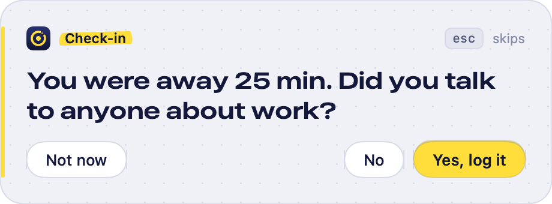
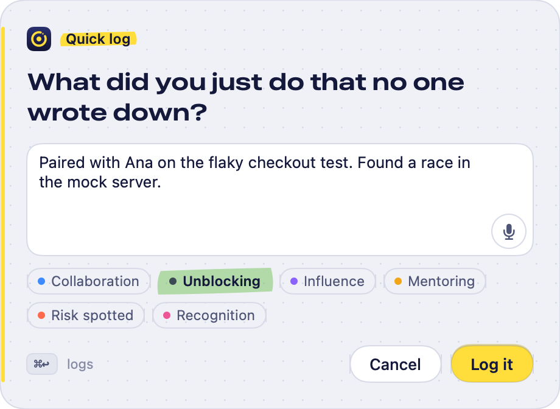
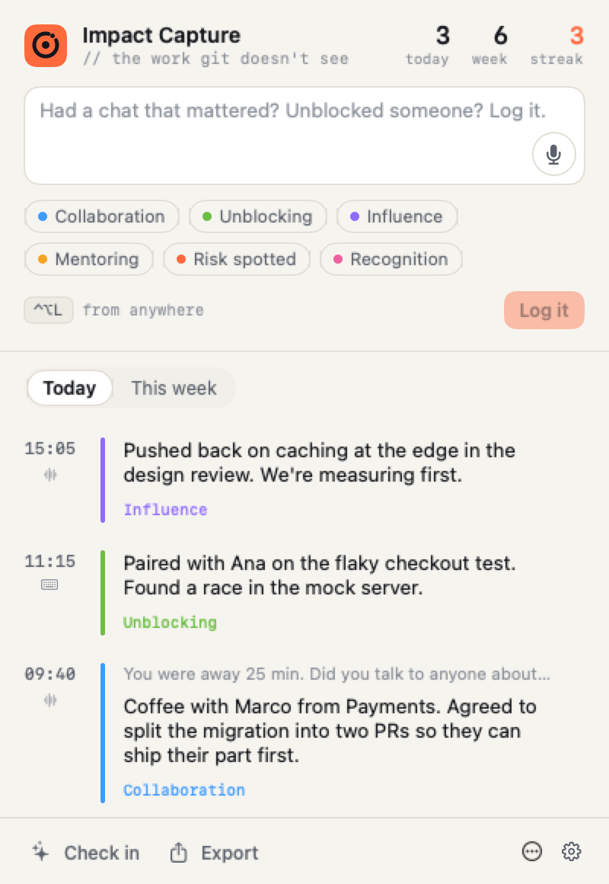
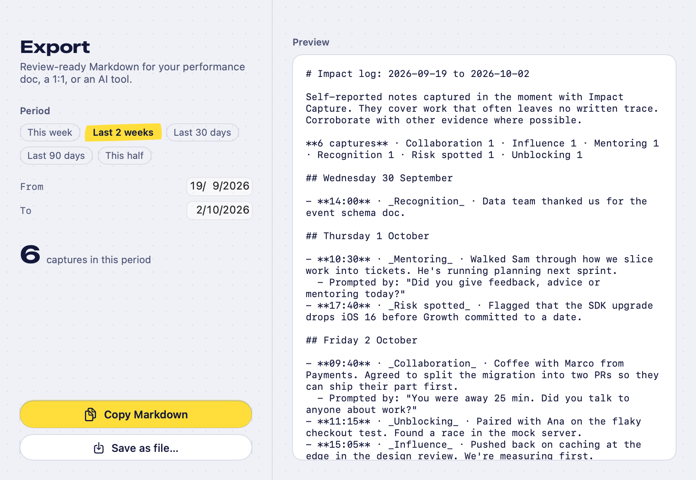

The coffee chat that unblocked a team. The review comment that changed a design. The risk you called early. Impact Capture catches it from your Mac's menu bar, as plain Markdown, so review season isn't guesswork.
brew install --cask frugoman/tap/impact-capture
Impact Capture checks in at natural breaks: when you come back to your Mac after time away, and once at the end of the day. Never mid-flow, capped per day, and it backs off if you keep skipping.
One small question, on every screen. Answer Yes or No, or skip with esc.

A sentence is plenty. Speech is transcribed on your Mac. Tag it if you like.

Added to one Markdown file per day, in a folder you pick.
### 11:15 · shortcut · typed · #unblocking
Paired with Ana on the flaky checkout test.
Found a race in the mock server.
Click the menu bar icon to log something and scroll back through the day. Or press ⌃⌥L anywhere to type, ⌃⌥⌘L to talk.

Export the last two weeks, the quarter or the half as Markdown for your performance doc, a 1:1, or an AI tool. Settings has a ready-made prompt that turns captures into evidence.

Grep it, sync it, version it, read it in ten years. Each entry records when, how and why it was captured, and the question it answered.
2026-09-17.md# Impact captures — 2026-09-17 (Thursday) ### 10:42 · prompt · away-return · voice · #collaboration > Q: You were away 25 min. Did you talk to anyone about work? Coffee with Marco from Payments. We agreed to split the migration into two PRs.
Setup takes a minute: pick a folder, choose how often it may check in, set your shortcuts.
brew install --cask frugoman/tap/impact-capture